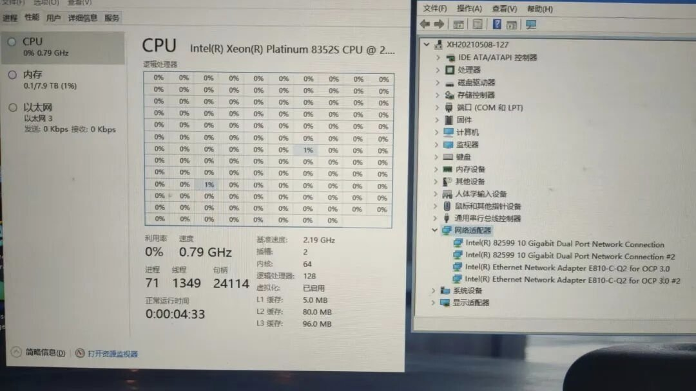
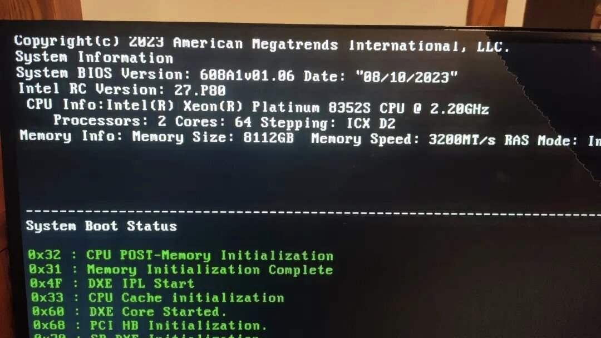
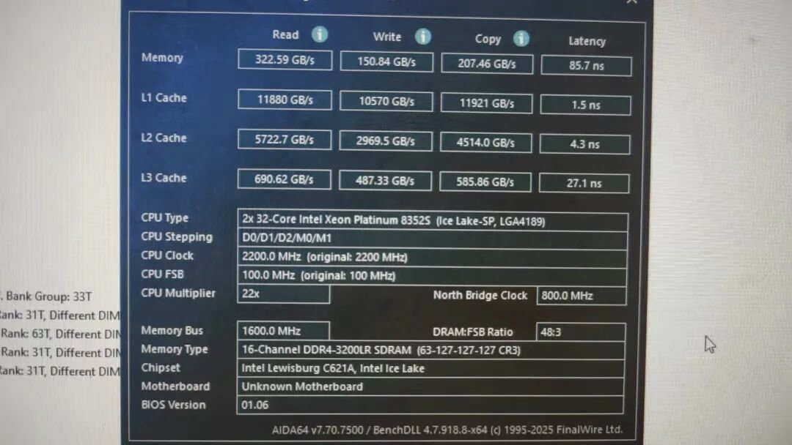
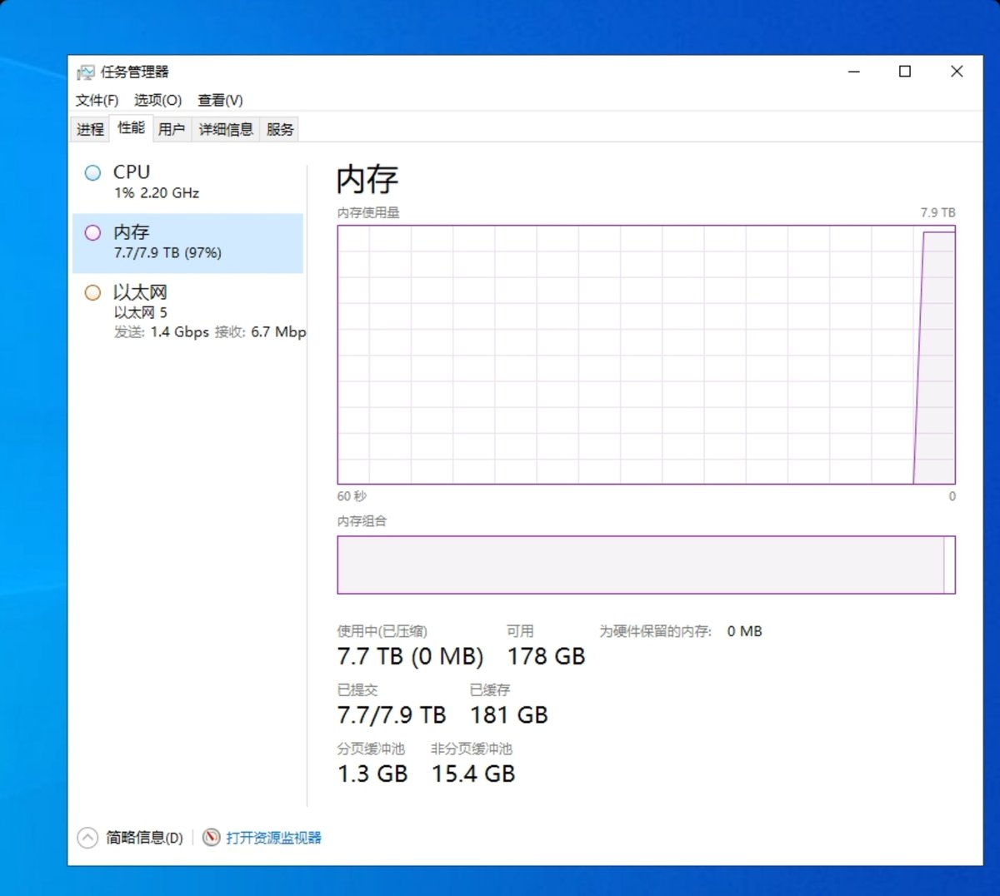

Windows的内存缓存机制真是一言难尽，玩了下傲腾持久内存，最大512G，黄鱼800左右一条，但依然比现有服务器条便宜，就是板u需要仔细淘
那么便宜也有坑，傲腾内存一定要严格的按比例配普通内存才能开启内存模式，否则的话只能开启AD模式，也就是硬盘模式。配普通内存的比例可以是 1:2、1:4 、1:8和 1:16。我配的就是 1:16，也就是 8T 内存配了 512G 的普通内存。这内存分1、2代都是d4es的，比普通版便宜。板子要求高点，CPU需要2代金牌志强6138，而且需要搭配一条服务器或者普条内存才能启用。3代傲腾持久内存是ddr5接口不是d4，而且一代傲腾仅限至强二代铂金cpu，6138点不亮
这个东西看场景来。你如果跑虚拟化，然后虚拟出一大堆的云桌面，那这个东西可太香了。比如做NAS，把所有的热数据全部缓冲在内存里面，其实是网吧的无盘服务器。每一台无盘客户机的往虚拟盘写入的东西，也就叫做回写，缓存在了内存里面就很快了。
那么便宜也有坑，傲腾内存一定要严格的按比例配普通内存才能开启内存模式，否则的话只能开启AD模式，也就是硬盘模式。配普通内存的比例可以是 1:2、1:4 、1:8和 1:16。我配的就是 1:16，也就是 8T 内存配了 512G 的普通内存。这内存分1、2代都是d4es的，比普通版便宜。板子要求高点，CPU需要2代金牌志强6138，而且需要搭配一条服务器或者普条内存才能启用。3代傲腾持久内存是ddr5接口不是d4，而且一代傲腾仅限至强二代铂金cpu，6138点不亮
这个东西看场景来。你如果跑虚拟化，然后虚拟出一大堆的云桌面，那这个东西可太香了。比如做NAS，把所有的热数据全部缓冲在内存里面，其实是网吧的无盘服务器。每一台无盘客户机的往虚拟盘写入的东西，也就叫做回写，缓存在了内存里面就很快了。



